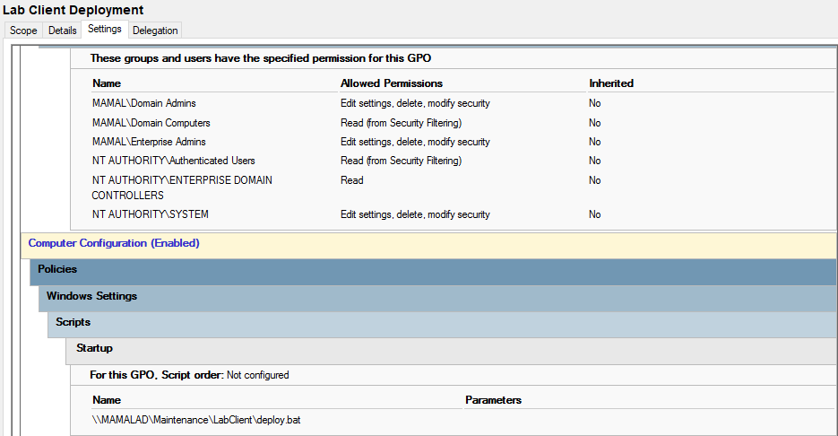
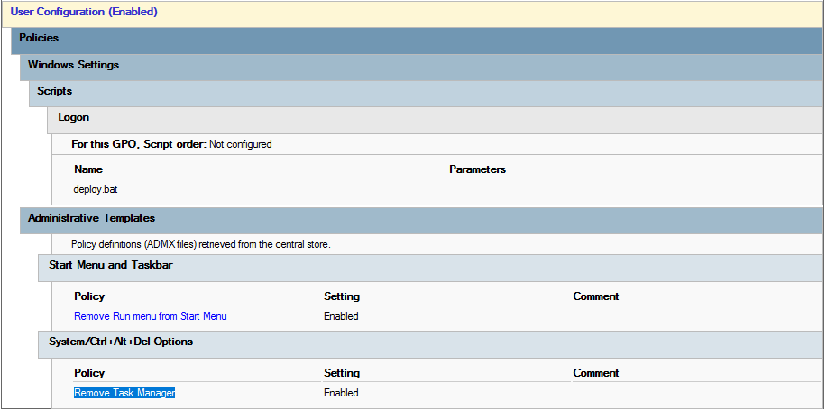

Lab Client Deployment Policy
Purpose
This policy ensures automatic deployment of the Lab Client system across all lab machines. It is used to initialize required configurations, scripts, and restrictions during system startup and user login.
How it works
The deployment is executed using a centralized batch script located on the network share. It runs at both system startup and user logon to ensure consistency across all machines.
Deployment Configuration
-
Computer Configuration (Startup Script)
- Executes deployment script at system startup
- Path:
\\MAMALAD\Maintenance\LabClient\deploy.bat
-
User Configuration (Logon Script)
- Executes deployment script when a user logs in
- Ensures user-level configuration is applied correctly
-
Administrative Templates (User Restrictions)
- Remove “Run” menu from Start Menu
- Remove Task Manager access (Ctrl + Alt + Del options)
System Impact
This policy ensures full control over lab environments by preventing unauthorized execution, restricting system tools, and enforcing consistent deployment across all machines.
Screenshot
Deployment and restriction configuration in Group Policy:

